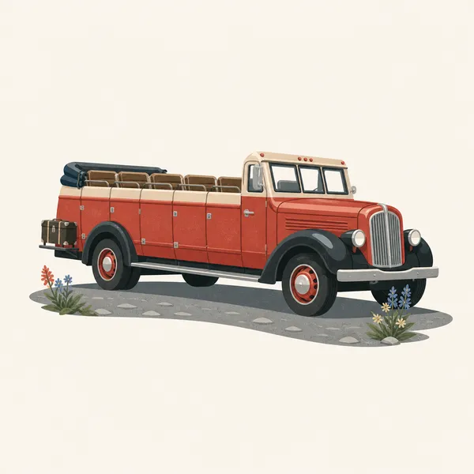
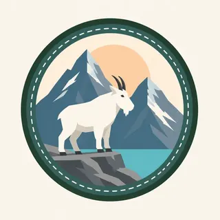

01
Lake McDonald
The long lake on the west side, colored by rock flour, with cedar and hemlock on the shore. It is the gentle introduction. The mountains above it are not gentle.
TrailMark Archive Edition
Montana | Northern Rockies
Sharp peaks, turquoise water, and a continental divide that still holds ice, if less of it than the park name promises.
Archive No. TM-GLA-008
National Park since 1910
Collection Northern Rockies
Park Overview
Glacier National Park was established in 1910 in northern Montana, where the Rocky Mountains break into horns, arêtes, and lakes the color of melted glacial flour.
The park shares the Waterton-Glacier International Peace Park with Waterton Lakes in Alberta, a 1932 designation that treats the ecosystem as larger than the border.
Going-to-the-Sun Road is the famous crossing. It is also a seasonal road. Snow, not the brochure, decides when the pass is a pass. Check NPS before you build a day around it.
Emotional Thesis
Glacial flour, rock powdered under ice, hangs in the lakes and turns them that unlikely blue-green. The color is a process, not a filter.
The park name is a promise the climate is revising. Come for the peaks and the lakes, and do not pretend the ice is the same ice the 1910 founders saw.
Landscape Highlights
01
The long lake on the west side, colored by rock flour, with cedar and hemlock on the shore. It is the gentle introduction. The mountains above it are not gentle.
02
A narrow road cut across the west face of the Garden Wall. When it is open it is one of the great drives on the continent. When it is closed it is a snowfield. Believe the gate.
03
The east-side valley of Swiftcurrent, Grinnell, and a cluster of horns. Bear country in the most literal sense. Hike with the current NPS distance rules in mind.
Wildlife
Glacier is one of the few parks in the lower 48 where grizzly bears remain part of the ordinary hiking calculation.

01
Carry bear spray where recommended and know how to use it. The animal has the right of way on its trail.
02
Mountain goats use the cliffs and salt licks along the road. A goat at the car window is a management problem, not a greeting.
03
Bald eagles, harlequin ducks, and cutthroat trout tie the park to its cold water. The color of the lake is mineral, but the life in it is animal.
Geology
Pleistocene glaciers cut the U-shaped valleys, cirques, and arêtes. Smaller glaciers remain, and they have been shrinking.
01
A horn such as a Matterhorn-style peak here is what is left when cirques eat a mountain from several sides.
02
Rock flour in the lakes is that carving, suspended. The turquoise is erosion you can see.
03
Do not cite a fixed number of remaining glaciers in a permanent essay. The count changes, and NPS is the place to read the current one.
The valleys open while the pass is still snow. Waterfalls are violent and many trails are a mix of mud and ice.
The traveling season. Wildflowers in the high meadows, and the road may or may not have been open long. Reservations and bear activity both peak. Check NPS.
Larch, if you are in the right drainage, and a sharper quiet. Snow can return to the pass early and mean it.
A different park: closed passes, ski and snowshoe approaches, and towns at the edges. The peaks do not go away. The roads do.
Photography
Glacier color is already strong. The work is composition and the ethics of bears and goats.
01
Shoot the shoreline rocks so the turquoise has a neutral neighbor. Otherwise the water looks invented.
02
A centered horn is a poster. A horn at the third, with a lake lead-in, is a place.
03
Do not bait or block them. If the animal is on the pavement, you are in its picture, not the other way around.
Field Notes
The park is named for ice, and the honest visit now includes noticing where that ice has stepped back.
TrailMark Field Notes

Badge Story
The Glacier badge keeps a horn, a lake, and a scrap of ice so the circle cannot be mistaken for a desert park or a rainforest.
Turquoise is rock flour, and the badge should remember that.
The peak is sharp because cirques made it sharp.
Green forest at the base keeps the high country from floating.
Archive No.008
LocationNorthern Rockies
ReleaseDivide Mark
Stewardship / Safety
Glacier asks for current information: the pass, the bear rules, and the trail that was fine last week. NPS is the source. This page is not.
Carry bear spray in the backcountry and know the food-storage rules at the camp you are actually using.
Do not approach mountain goats or bighorn, especially along the road.
Going-to-the-Sun Road is narrow. The view is not a reason to stop in a travel lane.
Snow bridges over creeks hide rotten snow well into summer. If you do not know the route, turn around.
Current conditions, fees, and alerts are on the National Park Service site.
Continue the Archive
Yellowstone is the volcanic neighbor. Olympic is the wet, icy Pacific contrast. Both are open in this archive.